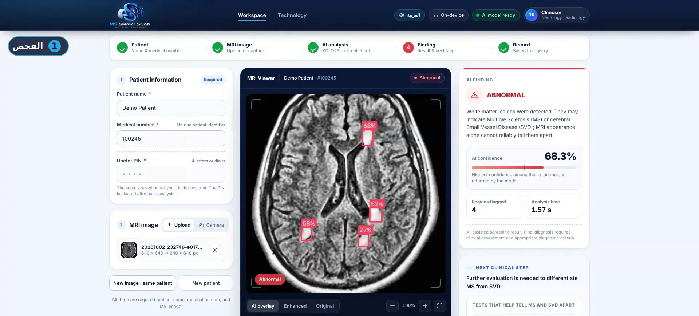

Dreams between the folds, unfolded into code that glows.
I design user experiences and build them for the web, and I also create worlds for virtual and extended reality (VR/XR). Every project starts with real people and real constraints, like a radiologist with too little time or a hiker lost in the desert, and ends as something you can actually click, hold or step inside.
Diploma in Programming and Web Development Technology, Technical and Vocational Training Corporation, Riyadh. GPA 4.58 / 5.
My toolboxFigma · Canva · hand sketching · character illustration · HTML · CSS · JavaScript · PHP · Python · Java · C# · SQL · PL/SQL · Unity 6 · Meta Quest · Fusion 360 · ESP32 · Raspberry Pi
Selected work
What I designed, what I built, and why.

12345
Calm clinical blue, chosen after studying hospital websites
Sketched by hand first, then refined in Figma
Runs offline, right on a Raspberry Pi
Doctor PIN sign-in, salted and hashed
Every function easy for a doctor to reach
MS SmartScan
UX, web and security lead · team of three
Built at Healthon 2026 · Patent pending
1st place · Riyadah AI HackathonWorking prototype · Patent pending
An offline clinical decision-support prototype that helps radiologists spot suspected MS-related white-matter lesions on brain MRI, on a Raspberry Pi, in seconds.
My contribution: Designed and built the MRI Scanner and Patient Registry web experiences, the shared SQLite data layer, and doctor PIN authentication with salted PBKDF2 hashing.
Graduation project · team of five · Patent pending
SAIF 2026 finalistWorking prototype · Patent pending
An off-grid search-and-rescue system for people lost in deserts and mountains with no mobile coverage. One press of SOS sends the person’s GPS location to the rescue team, and the team replies, so the person knows help is coming.
My contribution: Designed both 3D-printed device enclosures in Fusion 360 and co-wrote the ESP32 C++ firmware with my teammates. I took part in every stage, from first idea to finished build.
UV light · Move to searchCLUE #1 · FOOTPRINTCLUE #2 · TRACECLUE #3 · TIME 02:17
Beyond: Case 017
Built the crime scene, its storm and the voice phone
VR / XR · Tuwaiq Academy · team of five
A story-driven VR detective experience for Meta Quest: investigate a crime scene, interrogate AI-driven suspects by voice, and reach your own conclusion.
My contribution: Built and optimised the crime-scene environment; created the weather, lighting, rain, thunder and lightning systems; and developed the voice-driven phone call, countdown, ambience and scene transitions.
What if memories had shapes, or turned into paintings?
What if memories had shapes · interactive 3D art · React, Three.js
You write a memory: where it was, what you saw and heard, how it felt. The site turns it into a 3D world you can walk through, a sculpture, or a painting in watercolour, oil or ink.
write down a memory from your childhood
turn it into threads, glass or a painting
turn on the sound: rain, waves and birds, all made in code
Atlas Riyadh · a 3D city from open data · React, Three.js
I'm a data person. Stuck in traffic one day, I wondered how many people live in Riyadh. Then how many hospitals and schools there are, and whether they're enough for all of us. Then the roads, the metro and the parks. So I built the city as layers you can pull apart, to see what lines up and what doesn't.
start with the story, then see what the data says
pull the city apart, layer by layer
check if there are enough schools, hospitals and parks